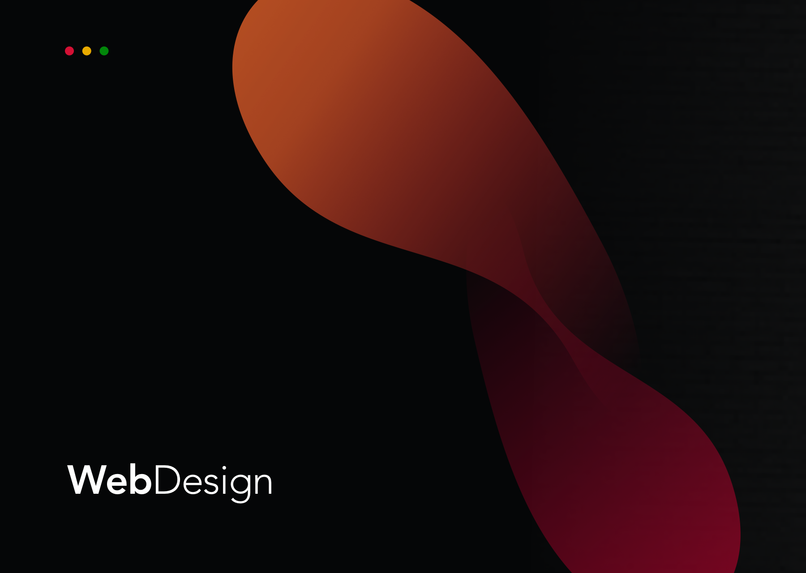
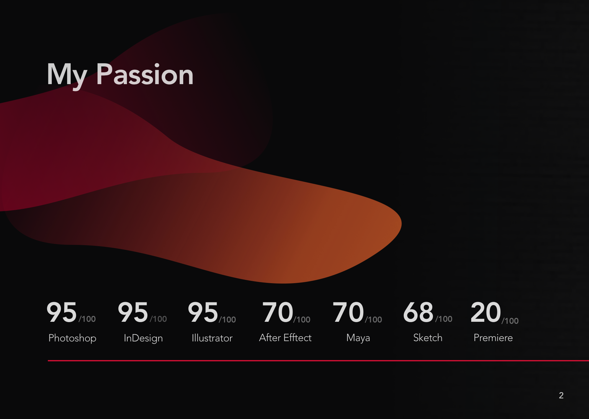

Laceels - Creatin' Glow Moments

Illustrator & Designer & Creative Developer

WebDesign
Master's thesis with RISC Software GmbH
WhatsUpp – Exploratory Data Visualization
Designed a web-based interactive visualisation for exploring topics and sentiment in online news from German-speaking regions. The project connects NLP-based analysis with a visual interface for exploratory data analysis.
- Role
- Research, Design Concept, Data processing, Prototype Implementation, and Evaluation.
- Focus
- Interactive data visualisation, topic exploration, sentiment analysis, online news analysis, user-centred design, and web-based interfaces.
- Outcome
- Interaction design concept and functional web prototype.
Design Concept
Implemented Prototype
WebDesign
Mindcraft Prototype
Semester Project
Mindcraft
A visual project that shows spatial thinking and iteration discipline. In the new portfolio, this can be connected to simulation, environment logic, or tool-assisted asset workflows.
WebDesign
Case study 01
Research assistant agent
A university project framed as an agentic workflow: collect sources, break down a research question, call tools, summarize findings, and keep a traceable decision log.
- Role
- Concept, prototype, evaluation
- Focus
- Planning loops and tool use
- Outcome
- Repeatable research workflow
